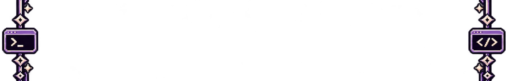

In Development
CODE / 01
Ordo
A local task manager I am using to practice C++ and object-oriented programming outside college exercises.
Open GitHub →PERSONAL ARCHIVE · CODE · FICTION
Rakumi is where I keep the things I code, write and invent when an idea refuses to leave me alone.

01 — OBSERVER
I study Computer Science and use Rakumi as an archive for the things I build, learn, write and obsess over.
Interest, not expertise: I am still learning most of this.
02 — PROJECTS
CODE / 01
A local task manager I am using to practice C++ and object-oriented programming outside college exercises.
Open GitHub →FRAGMENT / 02
A station, a moon far too large, and people who seem to have arrived there for the wrong reason. I would rather not explain the rest yet.
private draftCHANNEL / 03
My channel for games, projects, ideas and anything I get obsessed with enough to turn into a video.
Visit Channel →03 — OTHER AREAS
THEME / 04
A celestial Vencord theme built around deep navy surfaces, lunar blue and restrained gold.
CODE / 05
An academic C++ project developed with Malu to practice queues, stacks, CSV file handling and data structures through a turn-based train cargo distribution system.
Open GitHub →SITE / 06
This site. It is also where I practice HTML, CSS and JavaScript, without pretending I have mastered web development.
Source on GitHub →04 — NOW